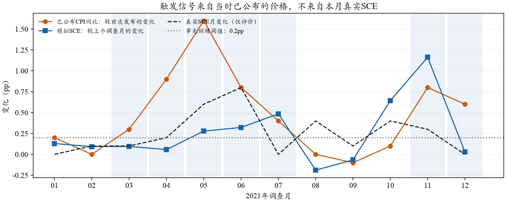
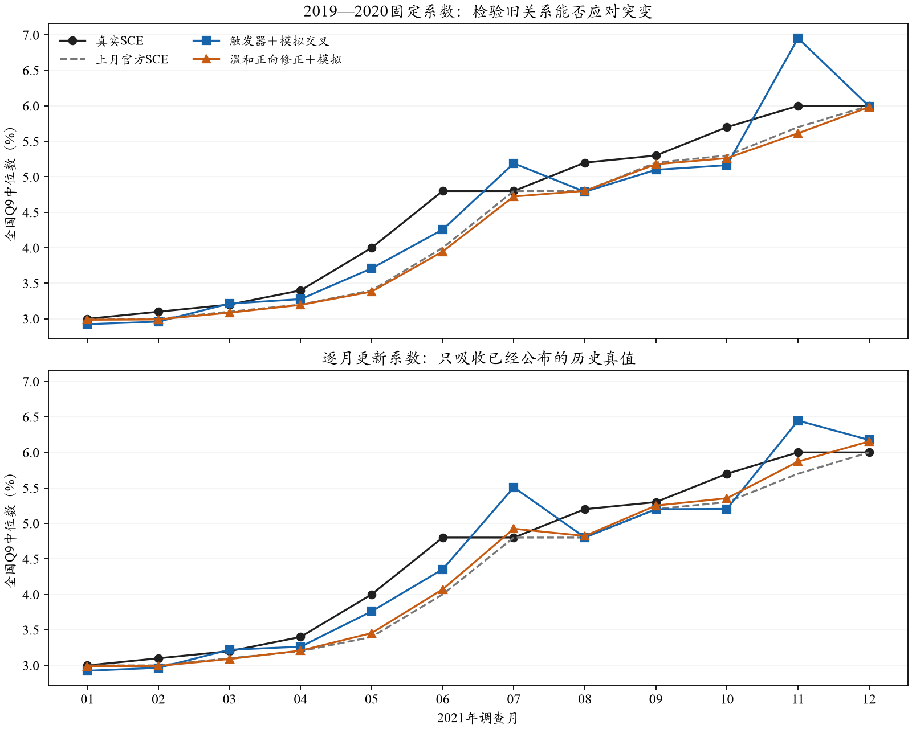
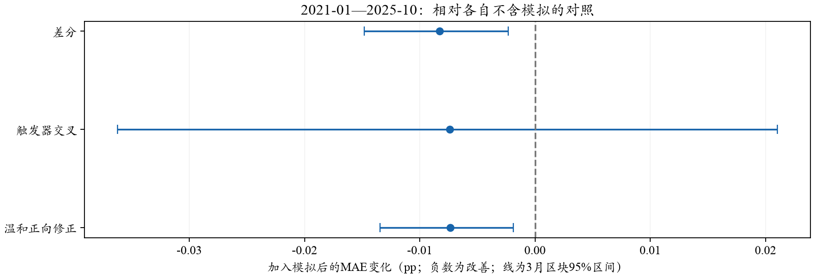

SCE · 可观察触发器与差分 · 2026-10-26 · 0新增API
触发器能改善异常初期，也可能在随后造成过度修正
你的设想可以落实为“价格信号触发、系数分状态调整”。本次离线比较中，触发器交叉模型把2021上半年MAE从基线0.3000降至0.1755pp；但下半年恶化到0.3874pp，全年0.2814仍不及基线0.2500。温和正向修正全年0.2398、全58月0.2253，均略有改善。不同模型的收益与代价必须同时看，当前不据此更换正式配置。
1．触发的是什么？
不能事后给2021年贴一个虚拟变量再当成可预测规律。本次用最新已公布CPI同比相对前次发布的变化：超过0.2个百分点时D＝1，否则D＝0。例如同比从2.0%升至2.3%会触发；从6.5%升至6.6%不会触发。因此它衡量涨幅加快，不是高通胀水平，也不是已经识别的结构冲击；同比变化仍包含基期效应。
阈值是2019-02—2020-12这23期价格变化的75%分位数，之后固定；其中有5个触发月。内层选参只用前17期确定阈值，随后6期验证岭回归强度。与原先“CPI≥4%”相比，新信号在2021年前有一些支持，但5个触发月仍不足以保证稳定估计。

浅蓝背景为触发月。真实当月SCE变化仅用于图上评价，没有用于触发判断。CPI是已发布的首发数据，可能对应上个参考月；并未使用事后才知道的当月实际CPI。
2．差分和交叉项分别解决什么？
差分：让回归预测“本月比上月变多少”，最后加回上月真实SCE。这样不会强迫当前模拟水平承担全部预测，但差分本身不会凭空产生模型遗漏的上行信号。
Δyₜ ＝ a ＋ φΔyₜ₋₁ ＋ γΔπₜ ＋ βΔSₜ ＋ δDₜ ＋ ηDₜ·max(Δπₜ,0) ＋ θDₜ·ΔSₜ ＋ εₜ
最终预测：ŷₜ ＝ yₜ₋₁ ＋ 预测的Δyₜ
y为官方全国Q9中位数，S为既有Core＋Normal（τ固定8）的模拟全国值，π为最新已公布CPI同比。D打开时，截距和模拟变化的系数可以不同。这是带外生变量与状态交叉项的差分回归；没有拟合MA残差项，也没有自动变成ARIMA。
温和正向修正：另比较一个限制较强的家族，在差分模型中加入正向价格变化，以及D·max(Δπ−ΔS,0)，后者只有“价格涨幅加快、模拟变化仍较小”时为正。两项系数限制为非负，其余系数自由。它只是待检验的修正函数，两种变化虽然同为pp，却不是同一经济量，差值不代表已估计的真实认知缺口；也不保证整个预测一定高于基线。
分段响应和干预变量是常见回归工具，可参见Hyndman与Athanasopoulos：干预变量及分段线性回归。这些方法支持模型写法，并不能证明本项目的具体触发阈值或经济机制成立。
3．先固定旧系数，再看逐月学习
为形成真正的一阶差分，2019-01仅提供滞后值，不进任何模型的训练。所有家族都用2019-02—2020-12的23期选参和拟合；之后评价2021-01—2025-10的58期。月末前最后公开SCE在全部相邻月上等于上月首发值，已逐行检查。固定版本全程不更新系数；更新版本每月仅吸收那时已经公布的更早SCE，正则化强度与阈值不再调。
固定交叉模型2021上半年MAE也降到0.1975pp，说明改善并非全由2021年内重估带来；但全年0.3067仍更差。其初始模拟变化系数在非触发月为-0.103，触发月为1.129，容易放大随后模拟本身较大的跳升。更新模型7月预测5.508%、真实4.8%；11月预测6.448%、真实6.0%。这些过冲解释了下半年退步，不能只报告上半年改善。

上图固定2019—2020系数，下图逐月只用已公布历史重新估计。两图使用相同坐标尺度，蓝色交叉模型的早期响应与后期过冲同时可见。所有模型都采用同一月末宏观信息口径。
4．完整比较：MAE越低越好，单位pp
逐月更新系数：各模型每月同样更新，SCE＋CPI与加入模拟的配对家族使用相同训练、验证和发布过滤规则；各自按同一候选集合选岭强度，数值未强制相同。完整8个家族保留，不依据2021排名修改协议。
展开查看：完全固定2019—2020系数的8个家族
固定温和正向修正2021为0.2789pp、全58月0.2496pp，均不如持续性。逐月更新的收益不能解释为仅凭2020年底知识就成功识别后来的异常。
作为不同阶段的代价检查，温和正向修正2022为0.3744pp（持续性0.3833），2023-01—2025-10为0.1675pp（持续性0.1765）；全58月0.2253（持续性0.2345），约降低3.9%。这些只是本次预设列表中的探索结果，尚未据此选定生产模型。
5．哪些收益来自模拟，哪些来自统计模型？
全58月差分家族不含模拟0.2349、加入模拟0.2266pp；温和正向家族0.2326→0.2253pp。触发器交叉家族全58月0.2329→0.2255，但2021全年0.2403→0.2814反而恶化。不能把全部后处理改善归给LLM，也不能说所有异常时期都受益。

3月区块重抽样、2000次、固定种子。区间未校正多模型比较，也不包含本次因观察2021弱点而提出新设计的选择不确定性。差分和温和修正的条件区间虽位于零以下，仍不能当成全新独立检验的显著预测贡献。
6．下一步如何用这些结果？
可以把“观察到的价格压力决定修正强度”保留为有依据的辅助建模方向，但不建议为了2021继续叠加年份虚拟变量或追着最小误差调阈值。差分提供了变化视角；自由交叉项更灵活也更容易过冲；方向约束能抑制部分不合理响应，现有改善仍较小。主简单组合、原始模拟与微观指标继续保留。
本轮是在已知历史弱点后开展的回顾性分析。虽然训练和更新按公布时间过滤，2021及后续月份已被查看，不能称新盲测；A的真实人口/历史和模型知识边界也没有消失。本次只评全国Q9；没有改变LLM个人回答，不能声称Q8、W1或IQR因此改善，也不自动升级路线B。
此前月末公平对照与主辅指标 · 本轮口径与复算命令
来源：outputs/sce_observable_inflation_trigger_20261026_v1。原始A/B、评分、τ、历史输出、报告v05及研究包v02均未改。0新增API，0新密度拟合。